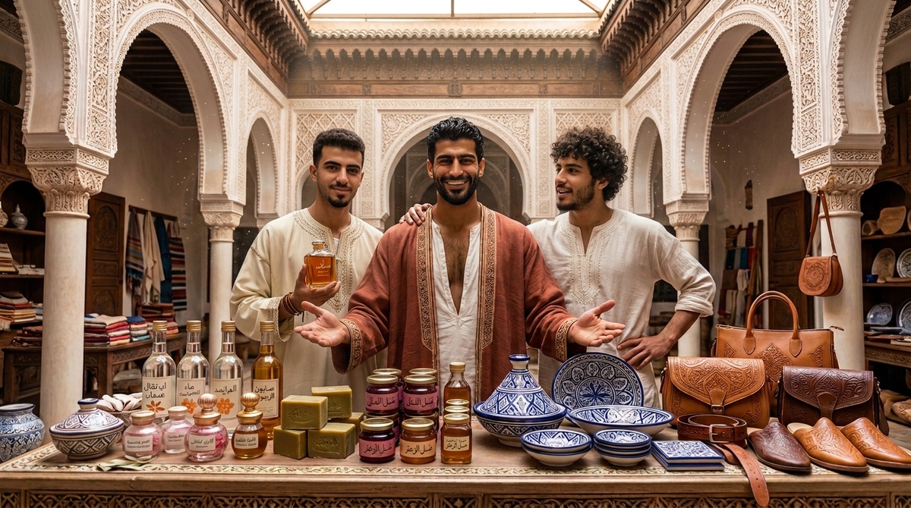
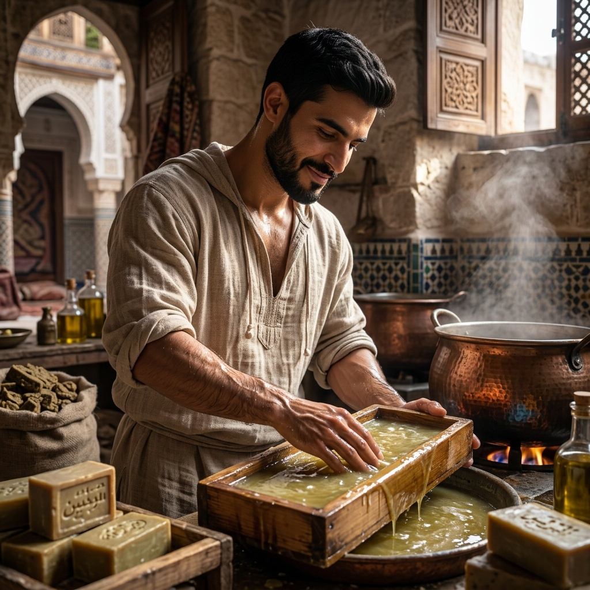
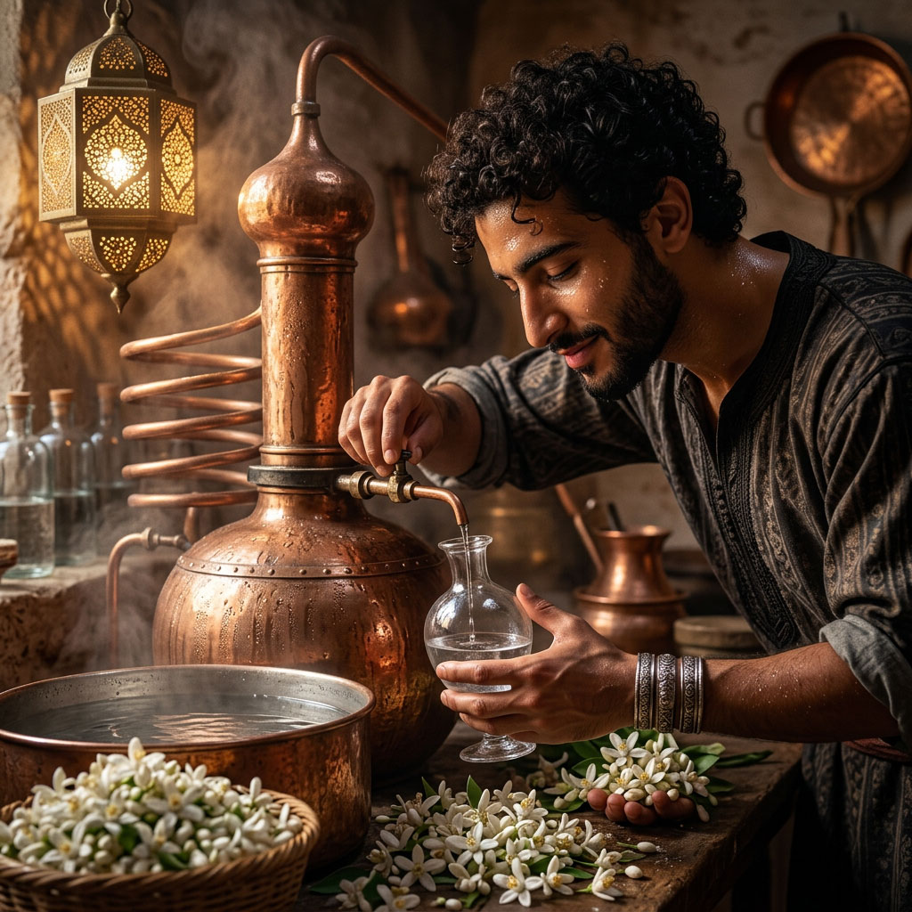

Artisanat du Riad
Ce que la maison produit de ses propres mains et de son jardin — pour la table, le corps, l'hospitalité.

Dar al-Hiraf ne forme pas seulement des apprentis : il en naît des produits. Parfum de rose damascène, savons à l'huile d'olive, eau de fleur d'oranger distillée des orangers du riad, céramique, maroquinerie et pièces de plâtre ajouré — chacun porte la marque de la maison et soutient, par sa vente, la vie de la communauté.
Une part des revenus finance l'entretien de la maison ; une autre revient aux artisans dès les premières pièces vendues. Ce n'est pas un artisanat de vitrine : c'est ce qui, en partie, fait vivre le Riad.
MÉTIER DE L'ODEUR
Parfums & essences — le métier avant le produit
L'art marocain des senteurs est d'abord une discipline de formation, au même titre que le zellige ou la calligraphie. Reconnaître une essence, doser un assemblage, connaître la plante avant l'huile — le même sérieux, la même lenteur.
La formation unit trois gestes : le nez qui distingue, la main qui distille, la mémoire qui retient. On apprend d'abord à sentir, puis à faire.
إِذَا قَامَتَا تَضَوَّعَ الْمِسْكُ مِنْهُمَا
نَسِيمَ الصَّبَا جَاءَتْ بِرَيَّا الْقَرَنْفُلِ
« Quand elles se levaient, le musc s'exhalait d'elles — comme la brise d'orient chargée du parfum du clou de girofle. »
Imru' al-Qays — Mu'allaqa

Le nez
Reconnaître, distinguer, mémoriser les essences. Avant toute composition, l'élève apprend à nommer ce qu'il sent — rose, oranger, jasmin, bois, résine.

Le geste
Distillation, assemblage, dosage. L'alambic — le mot vient de l'arabe al-inbiq, lui-même hérité du grec ambix — les proportions, le temps de chauffe : la main apprend la patience de la transformation.
Ce que l'apprenti apprend ici devient, une fois maîtrisé, ce que la maison produit et vend — voir ci-dessous.
Parfums & soins du corps

ESSENCE
Parfum & eau de rose damascène
La rose de Damas (Rosa damascena), héritière de la tradition de Kelaât M'Gouna et des vallées du Haut Atlas, est distillée selon le geste ancien.
Le nez, la main, le feu lent : ce que les apprentis apprennent dans l'atelier des parfums devient ici un produit de la maison.

CORPS
Savons à l'huile d'olive
Savons durs et savons de hammam, à base d'huile d'olive pressée, parfois parfumés à la rose, au jasmin ou à la fleur d'oranger.

JARDIN
Distillat de fleur d'oranger
Les orangers du patio et du jardin donnent, au printemps, la fleur d'oranger. Distillée sur place, elle devient eau de fleur.